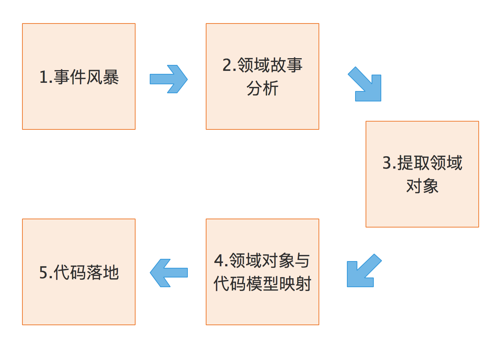
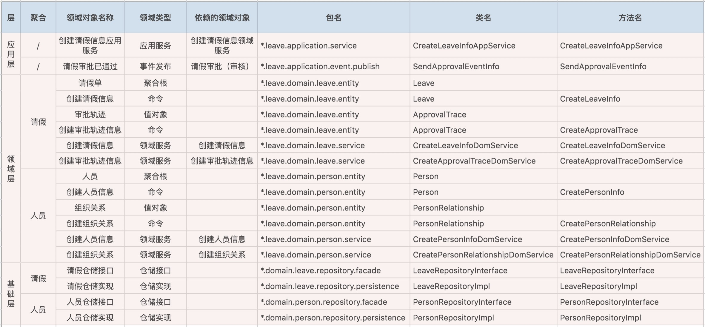
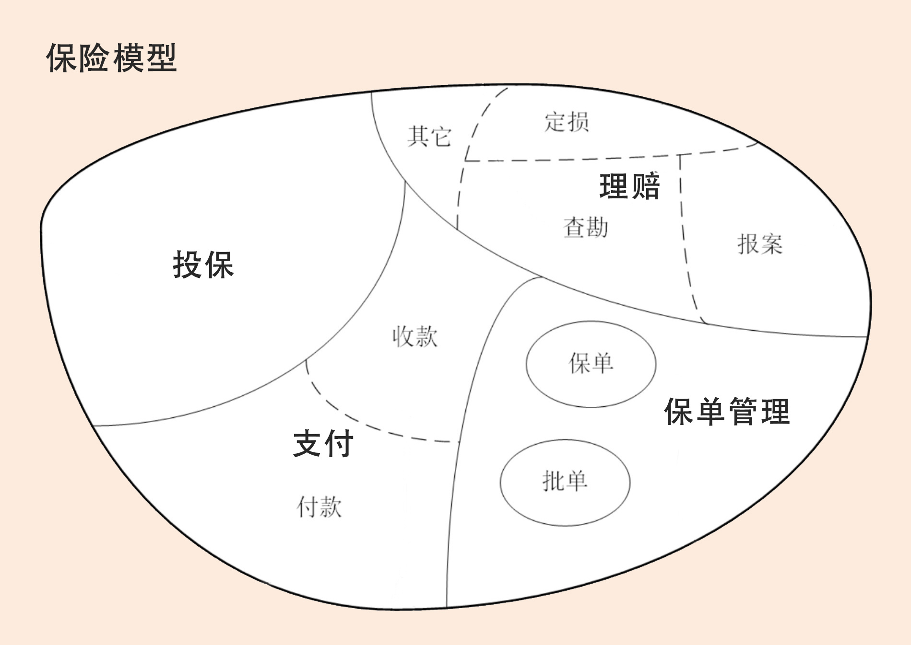

- 00 开篇词 学好了DDD，你能做什么？.md
- 01 领域驱动设计：微服务设计为什么要选择DDD.md
- 02 领域、子域、核心域、通用域和支撑域：傻傻分不清？.md
- 03 限界上下文：定义领域边界的利器.md
- 04 实体和值对象：从领域模型的基础单元看系统设计.md
- 05 聚合和聚合根：怎样设计聚合？.md
- 06 领域事件：解耦微服务的关键.md
- 07 DDD分层架构：有效降低层与层之间的依赖.md
- 08 微服务架构模型：几种常见模型的对比和分析.md
- 09 中台：数字转型后到底应该共享什么？.md
- 10 DDD、中台和微服务：它们是如何协作的？.md
- 11 DDD实践：如何用DDD重构中台业务模型？.md
- 12 领域建模：如何用事件风暴构建领域模型？.md
- 13 代码模型（上）：如何使用DDD设计微服务代码模型？.md
- 14 代码模型（下）：如何保证领域模型与代码模型的一致性？.md
- 15 边界：微服务的各种边界在架构演进中的作用？.md
- 16 视图：如何实现服务和数据在微服务各层的协作？.md
- 17 从后端到前端：微服务后，前端如何设计？.md
- 18 知识点串讲：基于DDD的微服务设计实例.md
- 19 总结（一）：微服务设计和拆分要坚持哪些原则？.md
- 20 总结（二）：分布式架构关键设计10问.md
- 答疑：有关3个典型问题的讲解.md
- 结束语 所谓高手，就是跨过坑和大海.md
03 限界上下文：定义领域边界的利器
你好，我是欧创新。今天我们重点学习“限界上下文”。
在 DDD 领域建模和系统建设过程中，有很多的参与者，包括领域专家、产品经理、项目经理、架构师、开发经理和测试经理等。对同样的领域知识，不同的参与角色可能会有不同的理解，那大家交流起来就会有障碍，怎么办呢？因此，在 DDD 中就出现了“通用语言”和“限界上下文”这两个重要的概念。
这两者相辅相成，通用语言定义上下文含义，限界上下文则定义领域边界，以确保每个上下文含义在它特定的边界内都具有唯一的含义，领域模型则存在于这个边界之内。你是不是感觉这么描述很抽象？没关系，接下来我会给你一一详细讲解。
在这之前，我想请你先看这样两个问题，这也是今天内容的核心。
- 为什么要提出限界上下文的概念（也就是说除了解决交流障碍这个广义的原因，还有更具体的吗）？
- 限界上下文在微服务设计中的作用和意义是什么？
什么是通用语言？
为了更好地理解限界上下文，回答这两个问题，我们先从通用语言讲起。
怎么理解通用语言这个概念呢？在事件风暴过程中，通过团队交流达成共识的，能够简单、清晰、准确描述业务涵义和规则的语言就是通用语言。也就是说，通用语言是团队统一的语言，不管你在团队中承担什么角色，在同一个领域的软件生命周期里都使用统一的语言进行交流。
那么，通用语言的价值也就很明了了，它可以解决交流障碍这个问题，使领域专家和开发人员能够协同合作，从而确保业务需求的正确表达。
但是，对这个概念的理解，到这里还不够。
通用语言包含术语和用例场景，并且能够直接反映在代码中。通用语言中的名词可以给领域对象命名，如商品、订单等，对应实体对象；而动词则表示一个动作或事件，如商品已下单、订单已付款等，对应领域事件或者命令。
通用语言贯穿 DDD 的整个设计过程。作为项目团队沟通和协商形成的统一语言，基于它，你就能够开发出可读性更好的代码，将业务需求准确转化为代码设计。
下面我带你看一张图，这张图描述了从事件风暴建立通用语言到领域对象设计和代码落地的完整过程。

- 在事件风暴的过程中，领域专家会和设计、开发人员一起建立领域模型，在领域建模的过程中会形成通用的业务术语和用户故事。事件风暴也是一个项目团队统一语言的过程。
- 通过用户故事分析会形成一个个的领域对象，这些领域对象对应领域模型的业务对象，每一个业务对象和领域对象都有通用的名词术语，并且一一映射。
- 微服务代码模型来源于领域模型，每个代码模型的代码对象跟领域对象一一对应。
这里我再给你分享一条经验，我自己经常用，特别有效。设计过程中我们可以用一些表格，来记录事件风暴和微服务设计过程中产生的领域对象及其属性。比如，领域对象在 DDD 分层架构中的位置、属性、依赖关系以及与代码模型对象的映射关系等。
下面是一个微服务设计实例的部分数据，表格中的这些名词术语就是项目团队在事件风暴过程中达成一致、可用于团队内部交流的通用语言。在这个表格里面我们可以看到，DDD 分析过程中所有的领域对象以及它们的属性都被记录下来了，除了 DDD 的领域对象，我们还记录了在微服务设计过程中领域对象所对应的代码对象，并将它们一一映射。

到这里，我要再强调一次。DDD 分析和设计过程中的每一个环节都需要保证限界上下文内术语的统一，在代码模型设计的时侯就要建立领域对象和代码对象的一一映射，从而保证业务模型和代码模型的一致，实现业务语言与代码语言的统一。
如果你做到了这一点，也就是建立了领域对象和代码对象的映射关系，那就可以指导软件开发人员准确无误地按照设计文档完成微服务开发了。即使是不熟悉代码的业务人员，也可以很快找到代码的位置。
什么是限界上下文？
那刚刚提到的限界上下文又是用来做什么的呢？
我们知道语言都有它的语义环境，同样，通用语言也有它的上下文环境。为了避免同样的概念或语义在不同的上下文环境中产生歧义，DDD 在战略设计上提出了“限界上下文”这个概念，用来确定语义所在的领域边界。
我们可以将限界上下文拆解为两个词：限界和上下文。限界就是领域的边界，而上下文则是语义环境。通过领域的限界上下文，我们就可以在统一的领域边界内用统一的语言进行交流。
综合一下，我认为限界上下文的定义就是：用来封装通用语言和领域对象，提供上下文环境，保证在领域之内的一些术语、业务相关对象等（通用语言）有一个确切的含义，没有二义性。这个边界定义了模型的适用范围，使团队所有成员能够明确地知道什么应该在模型中实现，什么不应该在模型中实现。
进一步理解限界上下文
我们可以通过一些例子进一步理解一下这个概念，不要小看它，彻底弄懂会给你后面实践 DDD 打下一个坚实的基础。
都说中文这门语言非常丰富，在不同的时空和背景下，同样的一句话会有不同的涵义。有一个例子你应该听说过。
在一个明媚的早晨，孩子起床问妈妈：“今天应该穿几件衣服呀？”妈妈回答：“能穿多少就穿多少！”
那到底是穿多还是穿少呢？
如果没有具体的语义环境，还真不太好理解。但是，如果你已经知道了这句话的语义环境，比如是寒冬腊月或者是炎炎夏日，那理解这句话的涵义就会很容易了。
所以语言离不开它的语义环境。
而业务的通用语言就有它的业务边界，我们不大可能用一个简单的术语没有歧义地去描述一个复杂的业务领域。限界上下文就是用来细分领域，从而定义通用语言所在的边界。
现在我们用一个保险领域的例子来说明下术语的边界。保险业务领域有投保单、保单、批单、赔案等保险术语，它们分别应用于保险的不同业务流程。
- 客户投保时，业务人员记录投保信息，系统对应有投保单实体对象。
- 缴费完成后，业务人员将投保单转为保单，系统对应有保单实体对象，保单实体与投保单实体关联。
- 如客户需要修改保单信息，保单变为批单，系统对应有批单实体对象，批单实体与保单实体关联。
- 如果客户发生理赔，生成赔案，系统对应有报案实体对象，报案实体对象与保单或者批单实体关联。
投保单、保单、批单、赔案等，这些术语虽然都跟保单有关，但不能将保单这个术语作用在保险全业务领域。因为术语有它的边界，超出了边界理解上就会出现问题。
如果你对我从事的保险业不大了解也没关系，电商肯定再熟悉不过了吧？
正如电商领域的商品一样，商品在不同的阶段有不同的术语，在销售阶段是商品，而在运输阶段则变成了货物。同样的一个东西，由于业务领域的不同，赋予了这些术语不同的涵义和职责边界，这个边界就可能会成为未来微服务设计的边界。看到这，我想你应该非常清楚了，领域边界就是通过限界上下文来定义的。
限界上下文和微服务的关系
接下来，我们对这个概念做进一步的延伸。看看限界上下文和微服务具体存在怎样的关系。
我想你买过车险吧，或者听过吧。车险承保的流程包含了投保、缴费、出单等几个主要流程。如果出险了还会有报案、查勘、定损、理算等理赔流程。
保险领域还是很复杂的，在这里我用一个简化的保险模型来说明下限界上下文和微服务的关系。这里还会用到我们在 [第 02 讲] 学到一些基础知识，比如领域和子域。

首先，领域可以拆分为多个子领域。一个领域相当于一个问题域，领域拆分为子域的过程就是大问题拆分为小问题的过程。在这个图里面保险领域被拆分为：投保、支付、保单管理和理赔四个子域。
子域还可根据需要进一步拆分为子子域，比如，支付子域可继续拆分为收款和付款子子域。拆到一定程度后，有些子子域的领域边界就可能变成限界上下文的边界了。
子域可能会包含多个限界上下文，如理赔子域就包括报案、查勘和定损等多个限界上下文（限界上下文与理赔的子子域领域边界重合）。也有可能子域本身的边界就是限界上下文边界，如投保子域。
每个领域模型都有它对应的限界上下文，团队在限界上下文内用通用语言交流。领域内所有限界上下文的领域模型构成整个领域的领域模型。
理论上限界上下文就是微服务的边界。我们将限界上下文内的领域模型映射到微服务，就完成了从问题域到软件的解决方案。
可以说，限界上下文是微服务设计和拆分的主要依据。在领域模型中，如果不考虑技术异构、团队沟通等其它外部因素，一个限界上下文理论上就可以设计为一个微服务。
不过，这里还是要提示一下：除了理论，微服务的拆分还是有很多限制因素的，在设计中不宜过度拆分。那这个度怎么把握好呢？有关微服务设计和具体的拆分方法，我会在实战篇中详细讲解。
总结
通用语言确定了项目团队内部交流的统一语言，而这个语言所在的语义环境则是由限界上下文来限定的，以确保语义的唯一性。
而领域专家、架构师和开发人员的主要工作就是通过事件风暴来划分限界上下文。限界上下文确定了微服务的设计和拆分方向，是微服务设计和拆分的主要依据。如果不考虑技术异构、团队沟通等其它外部因素，一个限界上下文理论上就可以设计为一个微服务。
可以说，限界上下文在微服务设计中具有很重要的意义，如果限界上下文的方向偏离，那微服务的设计结果也就可想而知了。因此，我们只有理解了限界上下文的真正涵义以及它在微服务设计中的作用，才能真正发挥 DDD 的价值，这是基础也是前提。
© 2019 - 2023 Liangliang Lee. Powered by gin and hexo-theme-book.